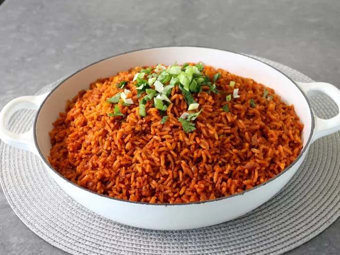

Jollof rice recipe
This is a foolproof recipe for cooking Jollof rice, West Africa’s most popular dish.
Preparation information
Preparation time :15 minutes
Cooking time :30 minutes
Number of servings :4
Difficulty level :intermediate
Ingredients
- 1 large, ripe tomato, cored and quartered
- 1 large red bell pepper, seeded and roughly chopped
- 1 whole habanero pepper, stem removed
- 1 whole Fresno chili, or jalapeño, stem removed
- 4 cloves garlic, peeled
- 1 tablespoon minced ginger
- 2 cups water
- 1/3 cup olive oil
- 1 red onion, diced
- 1 teaspoon salt, plus more to taste
- 1/4 cup tomato paste
- 2 tablespoons smoked paprika
- 1 teaspoon curry powder
- 1 teaspoon cumin
- 1 teaspoon dried thyme
- 1/2 teaspoon freshly ground black pepper
- 1/4 teaspoon turmeric
- 2 1/4 cups basmati rice
- 1 bay leaf
- 1 tablespoon chicken bouillon paste
- 1/4 cup chopped green onion for garnish (optional)
- 1/4 cup chopped cilantro, for garnish (optional)
Instructions
- Combine tomato, red bell pepper, habanero pepper, fresno chili, garlic, ginger, and water in a blender for the sauce. Blend on high until smooth and set
- Heat olive oil in a saucepan over medium heat. Add onion and salt and sauté until onion starts to soften, 4 to 5 minutes. Clear space in the middle of the pan, add tomato paste, and sauté for 2 to 3 minutes. Season with paprika, curry powder, cumin, thyme, pepper, and turmeric; continue cooking for 1 to 2 minutes until everything is well combined.
- Turn off the heat, and stir in the rice, making sure every grain of rice is coated with the oil-tomato mixture. Add bay leaf and chicken bouillon paste.
- Turn heat to high, stir in tomato sauce, and bring to a vigorous simmer. Cover with a tight fitting lid, reduce heat to medium-low, and simmer for 20 minutes. Do not remove the lid or stir rice.
- Turn off heat after 20 minutes, and set the timer for 12 minutes. Allow rice to sit and do not remove the lid.
- After the 12 minutes are up, remove lid, and fluff rice with a fork, separating all the grains. Serve garnished with green onions and chopped cilantro.
Cooks note :
If rice seems to be a little undercooked at this point, stop fluffing. Pat the rice down gently with the back of the fork, cover tightly again, and set heat to medium low. Cook for another 5 minutes, and check again.

https://www.allrecipes.com/chef-johns-jollof-rice-recipe-7499757